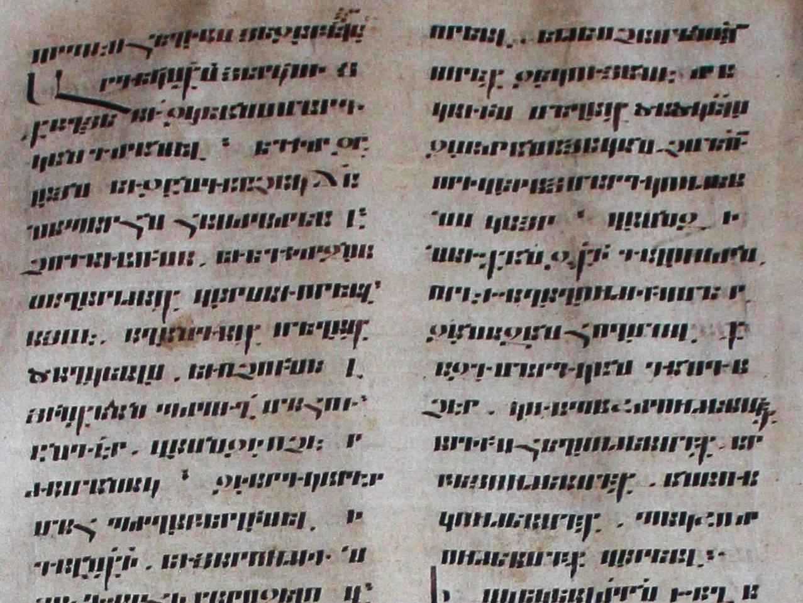
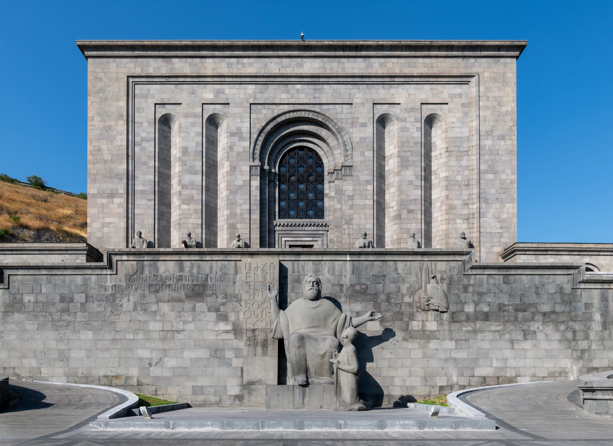
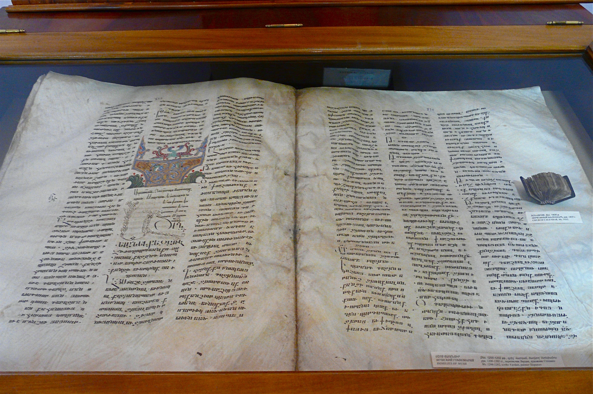
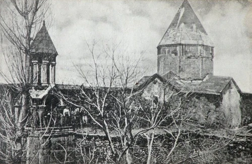

아직 펼치지 않은 카드성경을 위해 만든 글자 · 2마테나다란‘책의 집’이라는 이름의 건물에 옛 손글씨 책과 조각이 2만 3천 점 가까이 모여 있어요. 사람들은 왜 이렇게 오래 책을 베껴 썼을까요?아주 오래된 손글씨 책이 잔뜩 있는 집이야. 몇 권이나 있을까?
1202년 · 1915년 · 오늘튀르키예 동부 무시의 아라켈로츠 수도원 → 에치미아진·에르주룸 → 아르메니아 예레반의 마테나다란
마테나다란
아르메니아 예레반의 마테나다란 진열장에는 가장 큰 아르메니아 손글씨 책 「무시 설교집」이 펼쳐져 있어요. ‘무시’는 이 책을 오래 지킨 수도원이 있던 도시 이름이에요. 전해지는 이야기로는, 1915년 두 여인이 이 책을 둘로 나누어 따로 먼 길을 갔대요. 흩어졌던 조각을 하나씩 눌러 다시 한 권으로 모아 보세요.
아주아주 큰 책이 둘로 나뉘어 먼 길을 갔대. 조각을 눌러서 다시 모아 보자!
검수 전 시안이에요(기준서 1판). 만든 기록과 되찾은 기록은 기록대로, 1915년 이야기는 ‘전해지는 이야기’라고 밝혔어요. 기록마다 다른 점은 따로 모았어요. 상상은 ‘눈 감고 상상해 보기’에만 썼어요.
시안 확인용카드 단계 미리 보기
1
2년 동안 만든 큰 책
1200년, 바이부르트의 부유한 상인 아스트바차투르가 큰 설교집을 주문했어요. 필사자(책을 손으로 베껴 쓰는 사람) 바르단이 예르즌카(지금의 튀르키예 에르진잔)의 아바그 수도원에서 글을 쓰고, 스테파노스가 그림을 그렸어요.
송아지와 어린 암소의 가죽으로 만든 책장에 2년쯤 걸려 1202년에 다 썼어요. 교회의 설교와 순교자 이야기, 역사 기록을 모은 책이에요.

얼마 뒤 몽골·타타르 군대가 쳐들어와 책 주인은 목숨을 잃었고, 책은 속임수로 아흘라트의 한 파샤(지방을 다스리던 높은 관리) 손에 넘어갔어요.
무시의 아라켈로츠(‘사도들’, 곧 예수의 제자들) 수도원 수도사들이 예사이 주교를 앞세워 마을 사람들의 헌금을 모았어요. 한 해 가까이 애쓴 끝에 은화 4,000닢을 치르고 책을 아르메니아 교회로 되찾아 왔어요. 1205년부터 1915년까지 책은 이 수도원의 가장 귀한 보물 가운데 하나였어요.
아주 옛날, 2년이나 걸려서 손으로 쓴 아주 큰 책이야. 빼앗겼다가 마을 사람들이 돈을 모아 되찾았대.
물어보기네가 가진 책 가운데 가장 큰 책은 뭐야?
2
둘로 나눈 책
1915년, 제1차 세계 대전 중에 무시 지역의 아르메니아 사람들은 많은 이가 목숨을 잃는 큰 고난 속에 고향을 떠나야 했어요. 전해지는 이야기로는, 피란길의 두 여인이 무너진 아라켈로츠 수도원에서 이 책을 찾아냈어요.
28kg쯤 되는 책은 한 사람이 들기엔 너무 무거웠어요. 두 사람은 책을 둘로 나누어 한쪽씩 맡고, 저마다 동쪽 아르메니아까지 무사히 가져가겠다고 서로 약속했대요. 그러면 적어도 한쪽은 살아남을 테니까요.
두 반쪽과, 멀리 모스크바에 있던 두 장까지 세 조각을 하나씩 눌러 제자리로 모아 보세요.

마테나다란 진열장의 「무시 설교집」과 아주 작은 교회 달력(오른쪽) · 사진: Rita Willaert · CC BY 2.0 · 위키미디어 공용
조각을 눌러 보세요. 그 조각이 걸어온 길을 알려 줘요.
흩어졌던 조각이 다시 한 권이 되었어요. 지금은 마테나다란 진열장에 함께 누워 있어요.
위 사진은 지금 마테나다란에 놓인 이 책이에요. 흩어졌던 길을 빗대어 사진을 세 조각으로 나눴어요. 실제로 나뉜 자리와 양은 이와 달라요.
너무 무거운 책을 두 사람이 반씩 나눠 들고 갔대.
물어보기너라면 무겁고 소중한 보물을 어떻게 지켰을까?
3
책의 집에서
지금 이 책은 아르메니아의 수도 예레반에 있는 마테나다란(‘책의 집’)에 있어요. 진열장에는 가장 큰 이 책 곁에, 1435년에 만든 아주 작은 교회 달력(교회 축일을 적은 책)이 함께 놓여 있어요.
2012년에는 예레반의 테리안 거리와 모스코뱐 거리가 만나는 곳 가까운 녹지에, 이 책과 두 여인을 새긴 기념비가 세워졌어요.
가장 큰 책 옆에 아주 작은 책이 나란히 있어.
물어보기아주 작은 책에는 무엇이 적혀 있을까?
4
이름 없는 두 사람
두 여인의 이름은 남지 않았어요. 에치미아진에서 반쪽을 받은 사제도 그 여인의 이름을 묻는 것을 잊었다고 전해요.
“이 여인들이 글을 읽을 줄 알았는지조차 알려져 있지 않아요.”
조지프 다그디기안, 「무시 설교집을 구한 여인들을 기억하며」(2013, 이 안내서가 옮김)
읽지 못했을지도 모를 책을, 두 사람은 끝까지 지키려 했어요. 그 덕분에 800여 년 전 바르단이 쓰고 스테파노스가 그린 책장을 지금도 볼 수 있어요.
이름도 모르는 두 사람이 소중한 책을 지켜 줬어.
물어보기이름은 몰라도 고마운 사람이 있어?
눈 감고 상상해 보기
흙길 위로 해가 기울어요. 두 사람이 무거운 보따리를 고쳐 메자, 안에서 오래된 가죽 책장이 바스락거려요. 갈림길에서 두 사람은 서로에게 무슨 말을 했을까요?
눈을 감아 봐. 커다란 책을 반씩 나눠 안고 두 사람이 걸어가. 책장이 바스락바스락.
나의 자리
누군가 오래 베껴 써서 나에게까지 전해진 글이 있다면, 그것은 무엇인가요?
좋아하는 책의 한 문장을 손으로 베껴 써 볼까?
마음에 닿는 한 줄을 고르거나 직접 써 보세요. 한 줄을 남기면 이 자리의 도장이 찍혀요. 이 기기에만 저장돼요.
더 깊이
이야기를 보다 궁금해질 만한 것들이에요. 답을 읽거나 짧은 영화로 보세요.

1915년, 무시에서는 무슨 일이 있었어요?
그래서 책은 이제 다 모였어요?
뒷이야기
아직 펼치지 않은 이야기예요. 누르면 이야기가 펼쳐지고 색이 돌아와요. 더 알고 싶으면 근거를 따라가 보세요.
다 펼치면, 다음에 오실 때 새 이야기가 찾아와요.
오늘의 뒷이야기는 여기까지예요. 다음에 오시면 새 이야기가 기다리고 있어요.
펼친 뒷이야기 · 누르면 다시 볼 수 있어요
더 찾아보기
기록마다 다른 점
전해지는 이야기 1915년 두 여인의 이야기를 실은 EVN 리포트도 “이야기의 자세한 내용이 정확하든 아니든”이라고 적었어요. 이 카드는 EVN 리포트와 다그디기안의 글을 따랐어요.
두 반쪽이 걸은 길 아르주마니안 신부는 한쪽이 티플리스의 아르메니아 민속학회로 갔고, 다른 쪽은 1919년 바쿠에서 한 폴란드 장교가 팔려고 내놓았다고 적었어요. 다른 글(세르기엔코)은 묻힌 반쪽을 찾은 러시아 장교를 ‘니콜라이 데 고베르티’라고 하고, 두 여인이 자매였다는 이야기와 처음 만난 사이였다는 이야기를 함께 전해요.
언제였나 대부분의 글은 1915년이라고 하고, 아르주마니안 신부는 책이 1917년까지 수도원에 있었다고 적었어요.
다시 하나가 된 곳 EVN 리포트는 마테나다란이 세워질 때 두 쪽이 다시 만났다고 하고, 세르기엔코의 글은 나뉜 지 14년 만에 에치미아진에서 하나가 되었다고 해요. 아르주마니안 신부는 두 해 뒤 묻혔던 반쪽이 나와 다른 반쪽과 만났다고 적었어요.
언제 빼앗겼나 아르메니아 공영방송은 1203년 몽골·타타르 침입 때라고 하고, 아르주마니안 신부는 1204년 바이부르트의 한 판관이 훔쳤다고 적었어요.
걸린 해 EVN 리포트는 2년쯤이라 하고, 아르주마니안 신부는 맺음글을 들어 3년 동안 써서 1202년에 마쳤다고 해요.
무게 27.5kg(EVN 리포트), 28kg(아르메니아 공영방송), 61파운드(약 27.7kg, 다그디기안)처럼 조금씩 달라요.
모인 책의 수 앞면 카드의 2만 3천 점은 예레반시 관광 누리집(손글씨 책 약 2만 3천 점)과 같고, 마테나다란 누리집은 약 2만 점이라고 해요.
직접 가 보기
확인한 날 · 2026년 11월 18일 · 바뀌기 쉬운 정보라 정기적으로 다시 확인해요
이 책은 예레반 마슈토츠 대로 53에 있는 마테나다란의 전시실에 있어요. 누리집에 따르면 박물관은 화요일부터 토요일까지 10시~17시 50분에 열고, 일요일·월요일·공휴일에는 쉬어요. 가기 전에 누리집에서 다시 확인하세요.
두 여인의 기념비는 테리안 거리와 모스코뱐 거리가 만나는 곳 가까운 녹지에 있어요.
다시 모은 책 금박
흩어졌던 세 조각을 모두 모으면 카드에 금박이 입혀져요.
흩어졌던 세 조각을 한 권으로 모으기
아이와 함께 채색
아이와 함께 ‘영화처럼 보기’를 끝까지 보면 카드가 채색돼요.
아이와 함께 ‘영화처럼 보기’를 끝까지 보기
근거 보기 (18)
- EVN Report: Homilies of Mush — 1200년 바이부르트 상인 아스트바차투르의 주문, 아바그 수도원(예르즌카)의 필사자 바르단, 화가 스테파노스, 2년, 송아지·어린 암소 가죽, 처음 660쪽으로 봄, 설교·증언·역사 기록, 은화 4,000닢, 예레반 원형 공원의 두 여인 석상, “이야기의 자세한 내용이 정확하든 아니든”, 601장은 마테나다란·17장은 베네치아 메키타르 수도원·1장은 빈 메키타르 수도원·몇 장은 러시아 국립 도서관
- EVN Report: Where are our manuscripts? — “The story goes”, 무너진 아라켈로츠 수도원, 27.5kg, 둘로 나눔, 에치미아진의 사제(이름을 묻지 못함), 에르주룸에 묻음, 러시아 군인, 티플리스 아르메니아 민속학회(랄라얀), 마테나다란이 세워질 때 다시 만남
- 아르메니아 공영방송(1lurer.am, 2015): Homilies of Mush — 1200~1202, 1203년 침입과 주인 아스트바차투르, 속임수로 아흘라트의 파샤에게 팔림, 예사이 주교와 무시 사람들의 헌금, 한 해 가까운 협상, 은화 4,000, 1205년 아라켈로츠, 28kg
- Joseph Dagdigian(2013), Horizon Weekly: Heroines of Homilies of Mush rescue remembered — 22×27인치·61파운드, 비교적 안전한 동쪽(캅카스) 아르메니아로 가려 함, 에치미아진과 에르주룸, 러시아 군인, 마테나다란에서 다시 만남, 2012년 테리안·모스코뱐 거리 기념비, 글을 읽을 줄 알았는지조차 모름, 진열장의 가장 작은 사본
- Father Zaven Arzoumanian(2019), Massis Post: The largest Armenian manuscript — 70×55cm, 처음 660장·지금 601장, 날마다의 예배를 위한 설교와 순교자 이야기, 맺음글의 필사자 바르탄 가르네치·화가 스테파노스·주문자 아스트바차투르와 3년, 1204년 바이부르트 판관, 1917년까지 수도원, 티플리스·1919년 바쿠(폴란드 장교), 1977년 레닌 도서관의 두 장, 베네치아 17장·빈 1장
- V. Sergienko: Msho Charntir — 러시아 장교 니콜라이 데 고베르티, 티플리스, 14년 뒤 에치미아진, 두 여인이 자매였다는 이야기와 모르는 사이였다는 이야기, 책이 아르메니아 교회의 품으로 돌아온 이야기를 덧붙임, 에르카타기르, 70.5×55.5cm·송아지 600마리
- 마테나다란 누리집 — 관람 시간(화~토 10:00~17:50), 주소 마슈토츠 대로 53
- 마테나다란 누리집: 역사 — 손글씨 책 약 2만 점, 1915년 모스크바로 옮겨 그곳 아르메니아 교회에 둠·1922년 돌아옴, 1939년 예레반, 1959년 연구소, 1962년 마슈토츠의 이름
- 예레반시 관광 누리집: Matenadaran — 손글씨 책 약 2만 3천 점(아르메니아어·그리스어·아랍어 등)과 기록 문서 약 30만 점, 건물 앞 석상(마슈토츠와 코류운 1962, 여섯 석상 1963~1967)
- 예레반시 관광 누리집: 메스로프 마슈토츠 기념상 — 아르메니아 글자를 만든 사람, 무릎 꿇은 제자 코류운, 벽에 새긴 첫 문장
- Zhirayr Danielyan(1994), 하이카지안 아르메니아학 논총 초록 — 첫 아르메니아어 책 1512년 베네치아(구텐베르크 뒤 60년쯤), 아르메니아 땅의 첫 인쇄소 1771년(에치미아진)
- 아르메니아 교회 에치미아진 모교좌 누리집: 인쇄소 — 1771년 시메온 카톨리코스가 에치미아진에 세운 첫 인쇄소
- Manukyan · Sargsyan(2022), 마테나다란 회보 34 초록 — 아르메니아의 초기 인쇄본은 오랫동안 손글씨 책과 함께 쓰였음
- Cynthia Turner Camp, 조지아 대학교 하그렛 도서관 Manuscripts at UGA: A Manuscript — 손으로 만든 책은 한 권 한 권이 하나뿐
- 브리태니커: Armenian Genocide — 제1차 세계 대전 중 오스만 제국 정부의 강제 이주와 대량 학살, 아르메니아 사람들의 ‘제노사이드’ 주장, 튀르키예 정부의 입장
- 미국 홀로코스트 기념관 백과사전: The Armenian Genocide (1915–16) — 강제 이주와 학살, 적어도 66만 4천 명·많게는 120만 명이 목숨을 잃음
- 국제 제노사이드 학자 협회(2007), 미국 의회에 보낸 편지 — 1915~1918년 아르메니아 사람 학살을 제노사이드로 본 만장일치 결의
- 위키미디어 공용: Matenadaran - biggest and smallest(가장 큰 설교집과 가장 작은 교회 달력, 이름표), 무시 설교집 44쪽, 마테나다란 사진, 아라켈로츠 수도원 사진(1900년)과 설명
그림·사진·소리 출처
- 「무시 설교집」(1202년) 44쪽 · 퍼블릭 도메인 · 위키미디어 공용
- 사진: Rita Willaert · CC BY 2.0 · 위키미디어 공용
- 사진: Petar Milošević · CC BY-SA 4.0 · 위키미디어 공용
- 사진: Petar Milošević · CC BY-SA 4.0 · 위키미디어 공용
- 사진: Rita Willaert · CC BY 2.0 · 위키미디어 공용
- 사진: Rita Willaert · CC BY 2.0 · 위키미디어 공용
- 사진: Rita Willaert · CC BY 2.0 · 위키미디어 공용
- 「무시 설교집」(1202년) 44쪽 · 퍼블릭 도메인 · 위키미디어 공용
- 「무시 설교집」(1202년) 44쪽 · 퍼블릭 도메인 · 위키미디어 공용
- 「무시 설교집」(1202년) 44쪽 · 퍼블릭 도메인 · 위키미디어 공용
- 「무시 설교집」(1202년) 44쪽 · 퍼블릭 도메인 · 위키미디어 공용
- 사진: 1920년 이전에 펴냄(Research on Armenian Architecture 제공) · 퍼블릭 도메인 · 위키미디어 공용
- 사진: Petar Milošević · CC BY-SA 4.0 · 위키미디어 공용
‘처음 만나는 기독교 문화’의 깊은 카드예요. 카드 단계와 남긴 글은 이 기기에만 저장돼요.